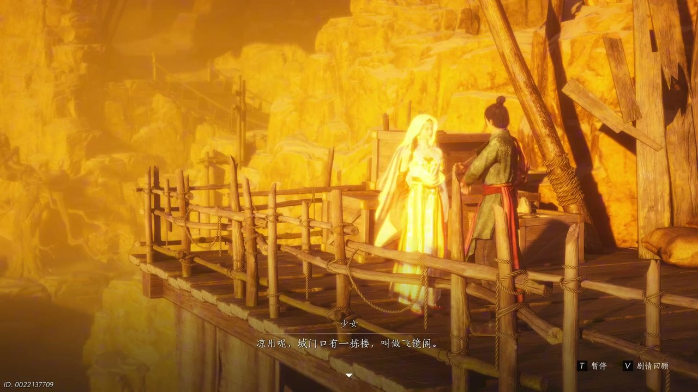
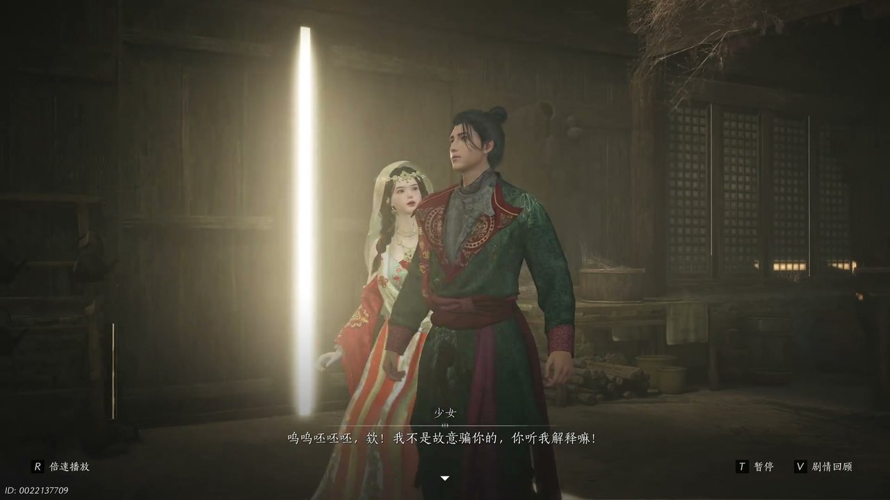
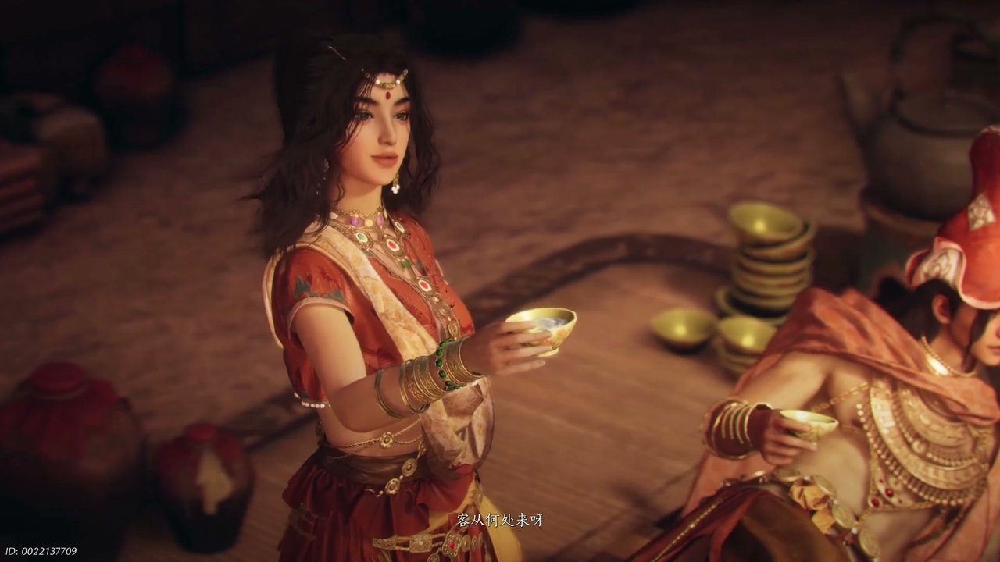
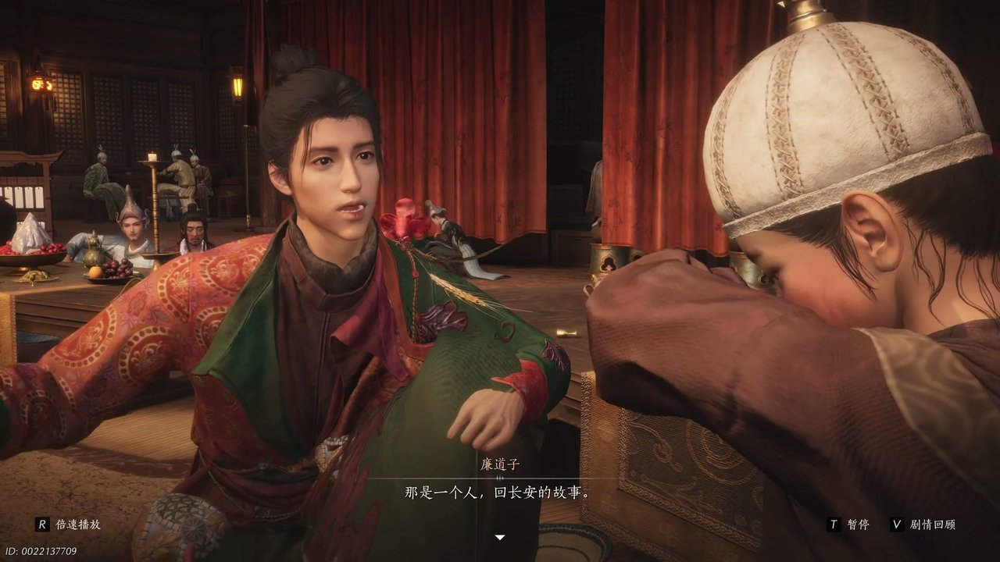
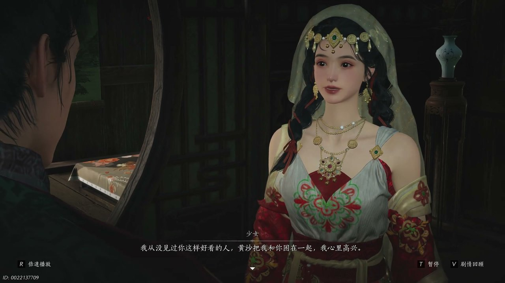
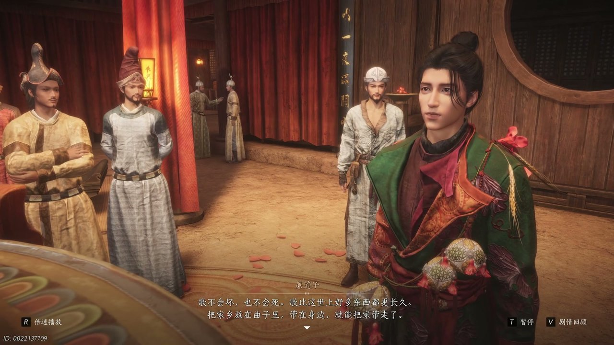

燕云背后的故事：第11集 客栈
燕云背后的故事：第11集 客栈

朋友们，上一集咱们说到——结识神秘少女同行、接过边关将士符节、沙海流民阻隔前路，三处线索交织让前路愈发迷茫。新来的朋友可能纳闷，少东家带着陌生向导穿行荒漠，为何沙暴突如其来困住二人？简单说，无边黄沙卷起狂风阻断去路，茫茫戈壁之中唯有一间废弃客栈可供落脚躲避风沙。可他哪知道，破败客栈之内聚集了来自各方的异乡乐人，人人心中都藏着去往长安的执念。这不，漫天沙暴席卷四野无处可逃，少东家只能跟着神秘少女踏入这间荒废已久的荒漠客栈。

漫天黄沙卷成厚重黄雾，狂风拍打地面扬起层层沙砾，骆驼在风沙里嘶鸣不已，再也无法继续前行。神秘少女走在前方，抬手拨开遮眼的沙尘，转头对着身旁的少东家开口：“凉州城门口有一栋楼叫做飞镜阁。”她伸手指向风沙深处隐约的轮廓，缓缓说道：“据说登上楼顶，等到月亮出来的时候，就能看见自个儿的家乡。”少东家停下脚步，抬手拂去衣袖上堆积的细沙，指尖摩挲着怀中那枚残破的边关符节，目光望向少女所说的飞镜阁方向。少女坐在一块被风沙打磨光滑的石块上，缓缓讲述起那个关于月亮里种子的故事，种子化作游鱼顺着月光一路游向长安，让少东家对去往凉州、抵达飞镜阁的心意愈发坚定。沙暴丝毫没有减弱的迹象，少女撑着石块站起身，招呼少东家跟着自己寻找躲避风沙的地方，不远处一座破旧客栈的屋檐在风沙中若隐若现。

二人深一脚浅一脚踏入破败客栈，门板早已腐朽不堪，推开时发出吱呀刺耳的声响。客栈地面散落着碎裂的陶碗与干枯杂草，屋顶多处破损，沙土顺着缝隙不断落在地面。少女脚步踉跄了一下，捂着脚踝面露痛苦之色，少东家想起此前她说自己被沙匪打伤腿脚无法行走，心中顿时生出疑惑。少东家开口质问：“你不是脚受了伤，走不了路吗？你不是被爹娘丢了，被商队抛下无处可去吗？”少女神色慌乱，连忙往后退了半步，语气急切地辩解：“我不是故意骗你的，你听我解释嘛。”她抬手揉了揉脚踝，坦言自己的脚伤早已恢复，只是为了能跟着少东家同行，才编造出一系列凄惨的遭遇。风沙拍打客栈门窗发出阵阵轰鸣，少女凑近少东家身边，诉说沙暴会持续数日，二人只能一同困在客栈之中，想要化解少东家心中的不满，不断软语哀求对方不要与自己置气。

客栈深处传来阵阵欢声笑语与丝竹声响，打破了屋外沙暴带来的压抑氛围。少东家带着满心疑惑循着声音走去，只见客栈厅堂之内灯火摇曳，一群来自西域各地的乐师、舞姬围坐在酒桌旁饮酒作乐。阿赤端起酒杯朝着少东家举杯，高声问道：“客从何处来啊？”一旁的阿青掩嘴轻笑，接话说道：“可从天上来。”厅堂中央，病弱舞姬身形单薄，不停低声咳嗽，却依旧要强撑着身姿，一旁的舞姬低声抱怨她不顾身体执意登台献艺。于阗小乐手坐在角落，手里攥着谷米花，嘴里念叨着大人们全都是骗子，不愿跟着众人一同去往遥远的长安。众人围坐一桌互相打趣，阿赤姐弟二人故意刁难新来的客人，说着要罚对方饮下上千杯酒水，病弱舞姬在一旁不停咳嗽，出言揭穿姐弟二人故意坑人的心思，厅堂之内热闹非凡，各色异乡之人聚在一起，全然不受屋外沙暴的影响。

于阗小乐手被众人逗弄之后满心委屈，蜷缩在角落不肯说话，嘴里念叨着长安路途遥远，自己不想再长途跋涉。少东家走到小乐手身边，放缓神色轻声开口：“我给你讲个故事，那是一个人回长安的故事。”他缓缓坐在木凳上，讲述起有人为了回到故土，甘愿放弃名垂青史的机会，放走困在月亮之中的观音，弄丢了成为众人领袖的机缘。少东家语调平缓，描述着琉璃谷与琉璃鼓的过往，说只有观音的眼泪才能敲响琉璃鼓，而那个人因为放走观音，彻底错失了第二次名垂青史的机遇。小乐手听得十分入神，稚嫩的脸上露出思索之色，低声感慨长安是别人的月亮，而自己的母亲才是属于自己的琉璃谷。客栈里其他乐人也纷纷停下手中动作，静静听着这段关于归途与抉择的故事，厅堂之中只剩下少东家低沉的话音与屋外呼啸的风沙。

故事讲完之后，神秘少女走到少东家身旁，目光温柔地望着他，轻声说道：“黄沙把我和你困在一起，我心里高兴。”少东家闻言一愣，随即面色微红，转过身去不愿直面少女的目光。少女步步紧逼，直言少东家外表冷漠，内心却记挂着诸多细碎小事，嘴上说着讨厌自己，心底却早已接纳了同行的自己。少东家抬手整理自己的衣衫，刻意掩饰自己的局促，将这类话语归为开心的荒唐话，转头说起自己父辈相识相恋的往事，也是靠着这般荒唐的话语打动彼此。少女又提起那位执着于名垂青史的故人，质问对方是只相信荒唐话语一刻，还是欺骗自己一辈子，戳中了少东家心底藏着的过往心事，让他沉默许久，望着窗外的圆月久久不语。少女缓缓吐露自己离家的缘由，家中繁杂琐事缠身，父亲性情古怪，自己才执意出逃，想要与少东家交心，诉说自己深藏心底的委屈。

厅堂之中众人商议起一场比试，规则是在一曲音律的时间里，找出一件能够带到长安、经久不坏的家乡物件，胜出者能够得到珍贵的孔雀冠。众人纷纷拿出自己珍藏的物品，小乐手拿出谷米花，阿赤带着自己的弟弟，病弱舞姬自知身体孱弱，早已备好棺木，不愿参与这场比试。所有人都在寻找实物留存家乡记忆，唯有人中师面前空无一物，面对旁人的质疑，他只说物件空与不空，全凭内心所想。少东家望着众人争执的模样，缓缓开口说道：“把家乡放在曲子里，带在身边，就能把家带走了。”他指着方才乐师弹奏的乐曲，说道音律没有形体，不会腐烂、不会损坏，比任何实物都更加长久。众人闻言陷入沉默，屋外沙暴渐渐减弱，去往凉州飞镜阁的道路即将重新开启，可客栈里这群异乡人的归途，依旧迷茫无措。
这一集看下来，我最大的感受就是风沙困住脚步，人心的归途却从未被阻隔。上一集里我们只知道奔赴凉州、神秘少女相伴、边关符节托付三条线索，到了这一集，我们知晓荒漠客栈相聚、异乡乐人同行、乐曲留存故乡、飞镜阁遥望家乡四条新线索。飞镜阁能否望见长安故土？神秘少女的真实目的究竟是什么？乐曲能否代替实物留住故乡？所有线索全部汇聚到凉州城池之内，少东家即将踏入凉州地界，前往飞镜阁完成托付。下一集，登临飞镜阁遥望故土。有人好奇飞镜阁之上究竟能看见什么？这群异乡乐人能否一同抵达长安？评论区留下你的想法，持续关注，咱们下一集登临凉州高楼、遥望千里长安！
关于我们
📱 公众号名称：三天游戏
✍️ 作者：曾三天
扫码关注公众号，获取每日最新资讯

商务合作与版权
商务合作 / 内容投稿 / 品牌推广
请关注公众号「三天游戏」后台留言联系
版权声明：本文由作者整理，转载需注明出处。